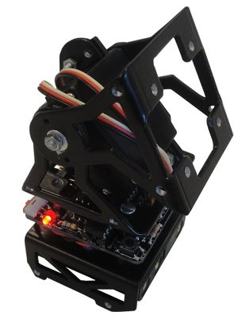
Contenido
[ocultar]- 1 Introducción
- 2 Montaje
- 2.1 Paso 0: Quitar la pintura del interior de los taladros de la pieza D (Opcional)
- 2.2 Paso 1: Colocar los separadores macho-hembra en la pieza D
- 2.3 Paso 2: Atornillar el portapilas a la pieza D
- 2.4 Paso 3: Atornillar la tarjeta Skycube a la pieza D
- 2.5 Paso 4: Atornillar el módulo MY1 a la Skycube
- 2.6 Paso 5: Conectar el servo y la alimentación
- 2.7 Paso 6: Poner las pilas
- 3 Fotos
- 4 Enlaces
- 5 Noticias
Introducción
Unimod es el módulo mínimo capaz de oscilar de manera autónoma. Para su montaje son necesarios los siguientes elementos:
- Un Módulo MY1 montado (Instrucciones de montaje)
- Una tarjeta Skycube
- Un portapilas plano para 4 pilas AAA, listo para ser usado (Instrucciones de montaje)
- La pieza D
- 4 separadores macho-hembra de 12mm y M3
- 4 separadores hembra-hembra de 10mm
- 8 tornillos M3 y entre 5 y 8 mm de largo
- 2 tornillos M3 de 8mm, con cabeza plana
- 2 tuercas M3
 Inicio: Piezas necesarias para montar UNIMOD A1 (Click para ampliar) |
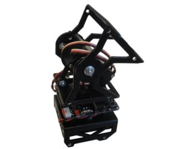 Final: Unimod A1 montado (Click para ampliar) |

Montaje
Paso 0: Quitar la pintura del interior de los taladros de la pieza D (Opcional)
Al igual que se hizo en el montaje de los módulos MY1, opcionalmente se puede eliminar la pintura situada en el interior de los taladros de la pieza D. Para ello utilizar una lima de sección circular. La pintura se quita fácilmente. Comprobar que los tornillos entran sin necesidad de usar un destornillador, una vez eliminada la pintura.
| 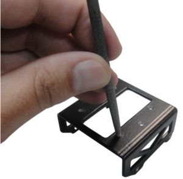 Quitando la pintura de los taladros de la pieza D (Click para ampliar) |
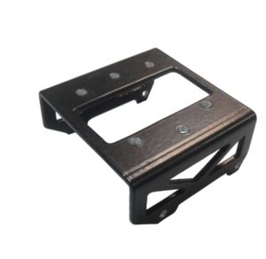 Pieza D con taladros sin la pintura (Click para ampliar) |


Paso 1: Colocar los separadores macho-hembra en la pieza D
| 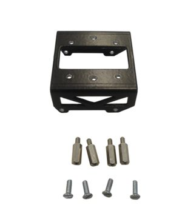 Pieza D junto a los 4 separadores macho-hembra y los 4 tornillos (Click para ampliar) |
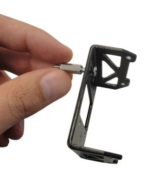 Colocando uno de los separadores (Click para ampliar) |
| 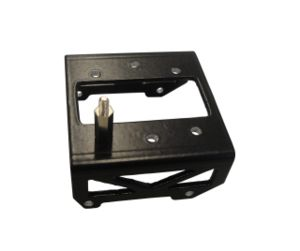 Un separador atornillado a la pieza D (Click para ampliar) |
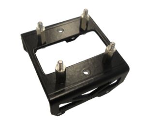 Los 4 separadores colocados (Click para ampliar) |


Paso 2: Atornillar el portapilas a la pieza D
- Colocar los tornillos de cabeza plana en el interior del portapilas
| 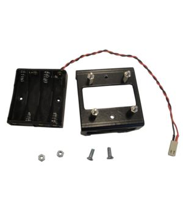 Portapilas, Pieza D con los separadores, dos tornillos de cabeza plana y dos tuercas (Click para ampliar) |
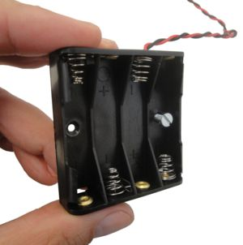 Insertando un tornillo en el portapilas (Click para ampliar) |
| 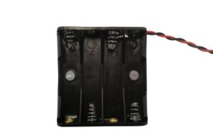 Los dos tornillos colocados en el portapilas (Click para ampliar) |
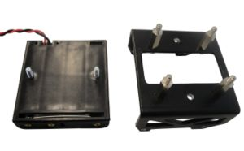 Vista inferior del portapilas, con los tornillos colocados (Click para ampliar) |


- Colocar el portapilas debajo de la pieza D y atornillar las tuercas
| |
| 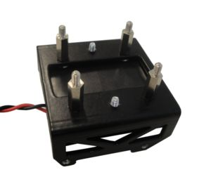 Colocar el portapilas en la parte inferior de la pieza D. ¡¡Respetar la misma orientación que se muestra en la foto!! (Click para ampliar) |
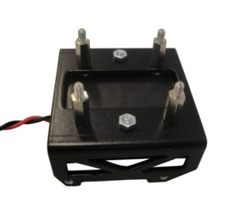 Portapilas atornillado a la pieza D (Click para ampliar) |


Paso 3: Atornillar la tarjeta Skycube a la pieza D
| |
| 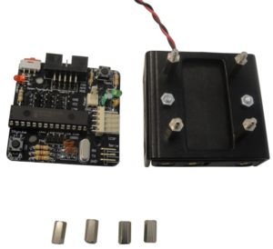 Tarjeta Skycube, pieza D con portapilas atornillado y cuatro separadores hembra-hembra (Click para ampliar) |
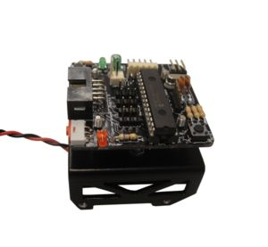 Tarjeta Skycube colocada encima de la pieza D. ¡¡Respetar la misma orientación que en la foto!! (Click para ampliar) |
| 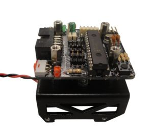 Tarjeta Skycube sobre la pieza D, con los 4 separadores hembra-hembra colocados (Click para ampliar) |


Paso 4: Atornillar el módulo MY1 a la Skycube
| |
| 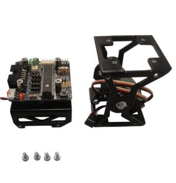 Tarjeta Skycube atornillada a la pieza D y al portapilas, Módulos MY1 y 4 tornillos (Click para ampliar) |
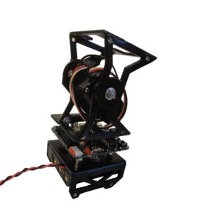 Módulo MY1 encima de la Skycube. ¡Respectar la misma orientación que en la foto! (Click para ampliar) |
| 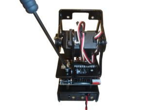 Atornillar el módulo a la Skycube (Click para ampliar) |


Paso 5: Conectar el servo y la alimentación
- Conectar el servo a la Skycube, en cualquier de los conectores rectos, correspondientes a los servos 2, 4, 6 u 8. El cable negro del servo tiene que apuntar hacia la parte exterior del módulo
| 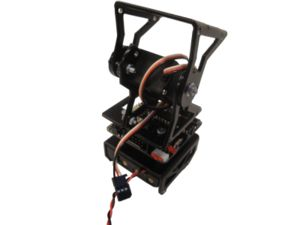 Unimod A1, sin el servo conectado (Click para ampliar) |
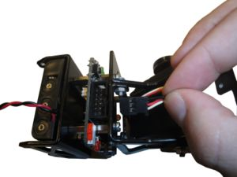 Conectar el servo, con la misma orientación mostrada en la foto (Click para ampliar) |


- Conectar el portapilas a la Skycube:
| 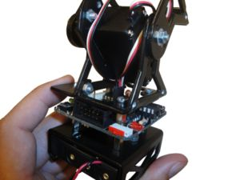 Unimod, con servo conectado (Click para ampliar) |
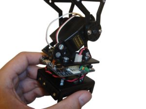 Unimod, con Alimentación conectada (Click para ampliar) |


Paso 6: Poner las pilas
- Por último, colocar las 4 pilas AAA en el portapilas y encender Unimod para comprobar que la conexión se ha hecho correctamente. El led rojo de power on se deberá encender.
| 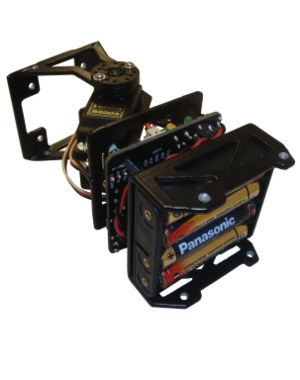 Unimod con las 4 pilas AAA colocadas (Click para ampliar) |
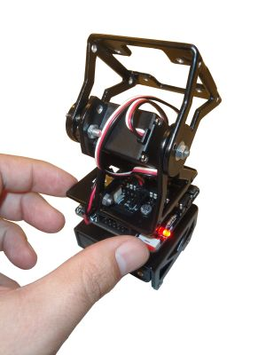 Unimod encendido (Click para ampliar) |


Fotos
| Álbum de fotos |
Enlaces
Noticias
- 28/Febrero/2010: Primera versión terminada
- 24/Febrero/2010: Comenzada esta página